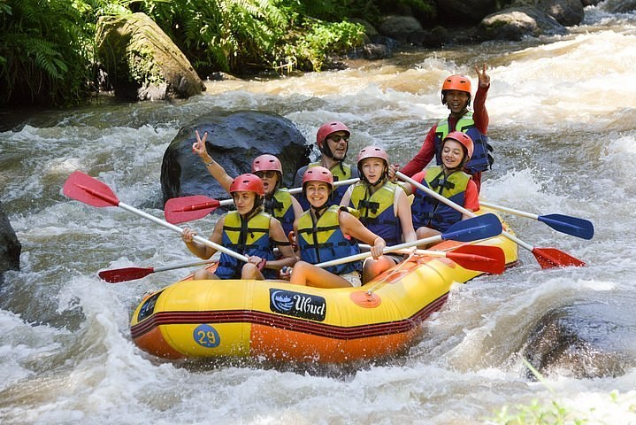

White water rafting is an exciting outdoor activity that involves navigating through fast-flowing rivers and rapids in an inflatable raft. It is a thrilling adventure that combines teamwork, skill, and adrenaline-pumping action. Participants work together to paddle and steer the raft while facing the challenges of turbulent waters, rocks, and waves. White water rafting offers a unique opportunity to connect with nature, experience the rush of the rapids, and create lasting memories with friends and family. Whether you're a beginner or an experienced rafter, this exhilarating sport promises an unforgettable experience for all.